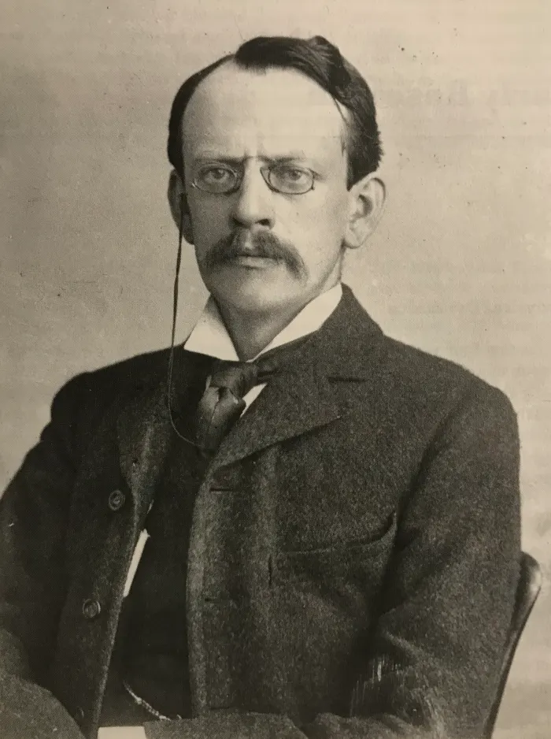

Modelo de Thomson
O modelo atômico de Thomson foi proposto no ano de 1898 pelo físico inglês Joseph John Thomson ou, simplesmente, J.J. Thomson. Após ter diversas evidências experimentais sobre a existência do elétron, ele derrubou a teoria da indivisibilidade do átomo proposta por John Dalton.
Thomson, a partir de seu modelo, confirmou e provou a existência de elétrons (partículas com carga elétrica negativa) no átomo, ou seja, o átomo possui partículas subatômicas.
Modelo atômico de Thomson, Brasil Escola
